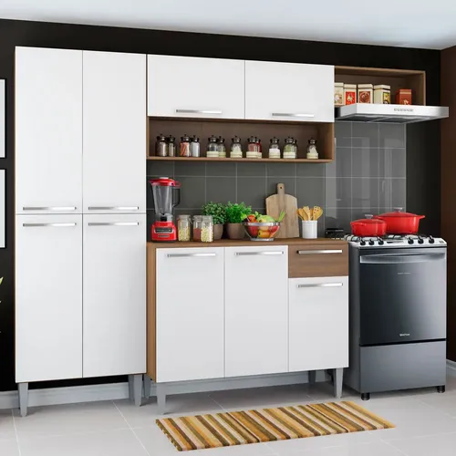

Deja de gastar en cafeterías: Reseña honesta de cafetera espresso manual

Saca tu calculadora. Si compras un capuchino de 4 dólares todos los días de la semana antes de ir al trabajo, estás gastando más de 1,000 dólares al año solo en café. El salto lógico para muchos es comprar una máquina para la casa, pero, ¿realmente puedes replicar ese sabor en tu cocina?
Nos propusimos evaluar una cafetera espresso manual orientada a principiantes. Queríamos saber si el proceso de hacer un espresso "real" por las mañanas es algo disfrutable, o si es tan tedioso que terminarás volviendo a la fila de la cafetería en menos de un mes.
El encanto del proceso (y la curva de aprendizaje)
Hacer un espresso no es presionar un botón y ya (eso hacen las de cápsulas, pero el sabor no se compara). Con una máquina manual, tienes un portafiltro, debes moler o comprar café molido específico para espresso, compactarlo con un "tamper" y luego extraer la bebida calculando el tiempo.
Las primeras tres tazas que hicimos sabían a agua sucia o estaban tan amargas que no podíamos beberlas. Hay una curva de aprendizaje real: debes entender cuánta presión aplicar al compactar el café y asegurarte de que el grosor de la molienda sea el correcto. Sin embargo, en el día tres, logramos extraer un espresso con una capa de "crema" dorada en la superficie que no le pedía nada a un café de especialidad.
¿Listo para ser tu propio barista? Mira el precio de este modelo
Ver disponibilidad de la CafeteraLa varilla de vapor: El verdadero reto
Si eres fan de los lattes o capuchinos, la clave no es solo el café, sino la leche texturizada. Esta cafetera viene con una varilla de vapor (steam wand). Aquí es donde la mayoría de la gente se frustra. En lugar de conseguir leche sedosa y dulce, al principio conseguíamos espuma gigante con burbujas que parecía jabón de lavar platos.
Tras ver un par de tutoriales de baristas en YouTube, el secreto fue sumergir la punta de la varilla solo unos milímetros bajo la leche para crear un remolino. Cuando lo dominas, poder hacer un latte art (o un intento de latte art) en tu casa el domingo por la mañana es increíblemente satisfactorio.
Los Contras: Limpieza y Tiempo
Seamos sinceros: hacerte un buen capuchino te tomará unos 5 a 7 minutos de tu mañana. Si eres de los que sale corriendo con el tiempo justo, esto te va a estresar. Tienes que esperar a que la máquina caliente, purgar el agua, extraer el café, texturizar la leche y lo peor: limpiar inmediatamente la varilla de vapor antes de que la leche se queme y se pegue al metal.
Además, para sacarle el verdadero jugo a estas cafeteras, eventualmente querrás comprar un buen molino de muelas (no de aspas), lo cual representa otra inversión adicional. Usar café pre-molido del supermercado funciona, pero no te dará esos sabores a chocolate o caramelo de los granos recién molidos.
Veredicto
Comprar una cafetera espresso manual no es solo comprar un electrodoméstico, es adoptar un nuevo pasatiempo. Si te gusta el ritual de preparar café, el olor a grano recién molido por las mañanas y estás dispuesto a pasar por una etapa de ensayo y error, te va a encantar.
El sabor que logras, una vez que dominas la técnica básica, es espectacular y supera con creces al de la mayoría de cafeterías comerciales que queman la leche. A nivel financiero, la máquina se paga sola en unos pocos meses de dejar de comprar café afuera.